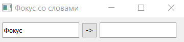
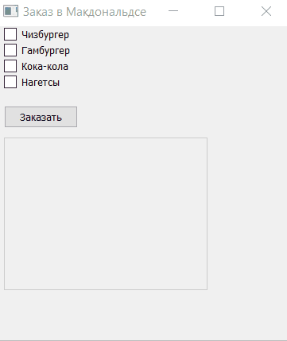
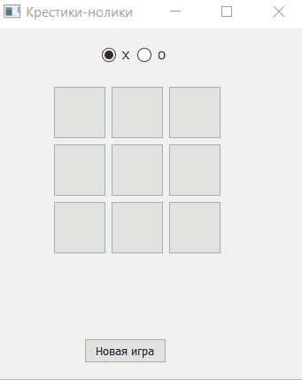

Напишите перекидыватель слов. На форме разместите два поля для ввода и кнопку. На кнопке должна быть показана стрелка от первого поля ко второму. В первое поле вводится строчка, по нажатию кнопки эта строчка перебрасывается в другое поле, при этом на кнопке меняется стрелка на противоположную. При повторном нажатии строчка летит обратно, а стрелка на кнопке меняется на изначальную. И так далее.
Напишите программу с графическим пользовательским интерфейсом на PyQT. В однострочное поле вводится корректное
арифметическое выражение, которое можно вычислить без ошибок. По кнопке «Вычислить» надо посчитать результат
этого выражения и вывести его в другое поле для ввода. Чтобы вычислить любое выражение, заданное в строке, можно
использовать функцию eval().
Пример: 1 + 2 * 3 -> 7
Напишите программу с графическим пользовательским интерфейсом на PyQT, в которой в два текстовых поля вводятся целые числа. После нажатия кнопки «Рассчитать» программа должна вычислить сумму, разность, частное и произведение введенных чисел и вывести результат каждой операции в отдельные виджеты QLCDNumber. В случае попытки деления на 0 программа должна выводить какое-либо сообщение.

Напишите программу «Арифмометр» с графическим пользовательским интерфейсом на PyQT. На форме разместите два поля для ввода, в которые по умолчанию запишите нули, между ними — 3 кнопки: +, -, * , и третье поле для ввода, так же изначально заполненное нулем. При нажатии на кнопку с операцией в третье поле выводится результат. Постарайтесь сделать так, чтобы третье поле нельзя было редактировать вручную.

Напишите программу «Заказ в Макдональдсе» с графическим пользовательским интерфейсом на PyQT. Пользователь должен иметь возможность выбирать одно или несколько блюд. После нажатия на кнопку «Заказать» в отдельном виджете должен отображаться «чек» с выбранными позициями. В качестве виджета для вывода информации о заказе можете использовать виджет QPlainTextEdit.
Разработайте игру «Крестики-нолики» на поле 3×3 с графическим пользовательским интерфейсом на PyQT. Поле должно быть набором кнопок (подсказка: виджеты можно объединять в списки). При нажатии на кнопку в зависимости от того, чей ход, текст кнопки меняется на ’X’ или ’0′. Выбор первого игрока производится с помощью QRadioButton. В случае победы или ничьей должно отображаться соответствующее сообщение. После победы одного из игроков игровое поле нужно блокировать до начала новой игры. Новая игра может быть начата после нажатия на соответствующую кнопку или при смене обозначения хода у первого игрока.
